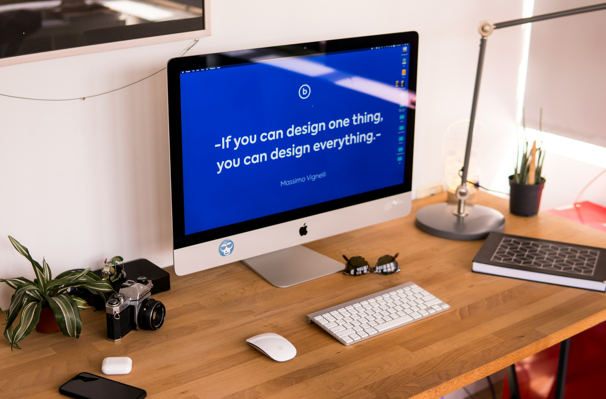

Top 5 Web Design Tips
Good web design is more than just pretty colors and fonts. It’s about creating a positive experience for your visitors and ensuring your site is easy to navigate, responsive, and visually engaging. Here are my top 5 essential tips for creating modern, user-friendly websites that stand out in 2025 and beyond.
Keep It Simple and Clean
One of the biggest mistakes new designers make is overloading pages with too many elements. A cluttered design can confuse visitors and make it harder for them to find what they need. Use whitespace generously to give your content room to breathe. Focus on the essentials — clear headings, concise text, and well-placed images. Simplicity enhances readability and keeps your audience focused on what truly matters.
Use a Consistent Color Scheme
Choose a color palette that matches your brand or personal style and stick with it throughout your site. Limit your main colors to 2–3 shades and add complementary accent colors if needed. Consistent colors not only look professional but also help establish brand identity. Tools like Adobe Color or Coolors can help you find beautiful palettes that work well together.
Prioritize Easy Navigation
Your visitors should never feel lost while exploring your site. A clear and intuitive navigation menu is essential. Place your main menu at the top or side where people expect to find it, and use descriptive labels for each link. Consider adding a search bar and breadcrumb navigation if you have a lot of content. Easy navigation encourages visitors to stay longer and engage more deeply with your content.
Focus on Typography and Readability
Typography plays a huge role in how people perceive your website. Choose clean, web-safe fonts for body text and use contrasting font styles for headings to create a clear hierarchy. Keep your paragraph widths reasonable — about 50–75 characters per line — and use line spacing (1.5em or so) to make your text comfortable to read. Good typography makes your content approachable and keeps your audience engaged.
Make It Responsive and Mobile-Friendly
In today’s world, a large portion of web traffic comes from smartphones and tablets. A responsive design ensures your website looks great on all screen sizes. Use flexible grid layouts, media queries, and responsive images to adapt your content automatically. Test your site on different devices and orientations. Google’s Mobile-Friendly Test tool can help you catch problems early and improve your ranking in search results.
Bonus Tip: Keep Improving
Web design trends and user expectations change quickly. Stay updated by reading design blogs, following industry leaders, and experimenting with new tools and frameworks. Don’t be afraid to iterate and refresh your design based on feedback and analytics. Continuous improvement is key to maintaining a modern, high-performing website.
Conclusion
Great web design combines creativity, usability, and functionality. By keeping your design clean, using consistent colors, ensuring easy navigation, paying attention to typography, and making your site responsive, you set yourself up for success. Whether you’re building your first website or revamping an existing one, these tips will help you create an impressive and user-friendly online presence. Happy designing!